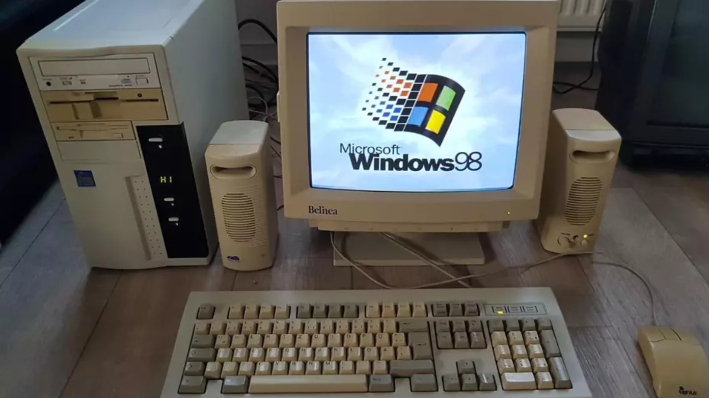

Esto es el body todo esto aparecera en la pagina web
Los ordenadores antiguos con Windows 98 marcaron una época dorada en la informática personal a finales de los años 90. Con su interfaz gráfica amigable y la capacidad de soportar una variedad de aplicaciones, Windows 98 facilitó el acceso a la tecnología para millones de usuarios. Equipados con procesadores modestos y discos duros de baja capacidad, estos dispositivos eran ideales para tareas básicas como navegar por Internet, jugar a videojuegos clásicos y trabajar con programas de productividad. Aunque hoy en día parecen obsoletos, para muchos representan una nostalgia y un hito en la evolución de la computación.
9 10 2